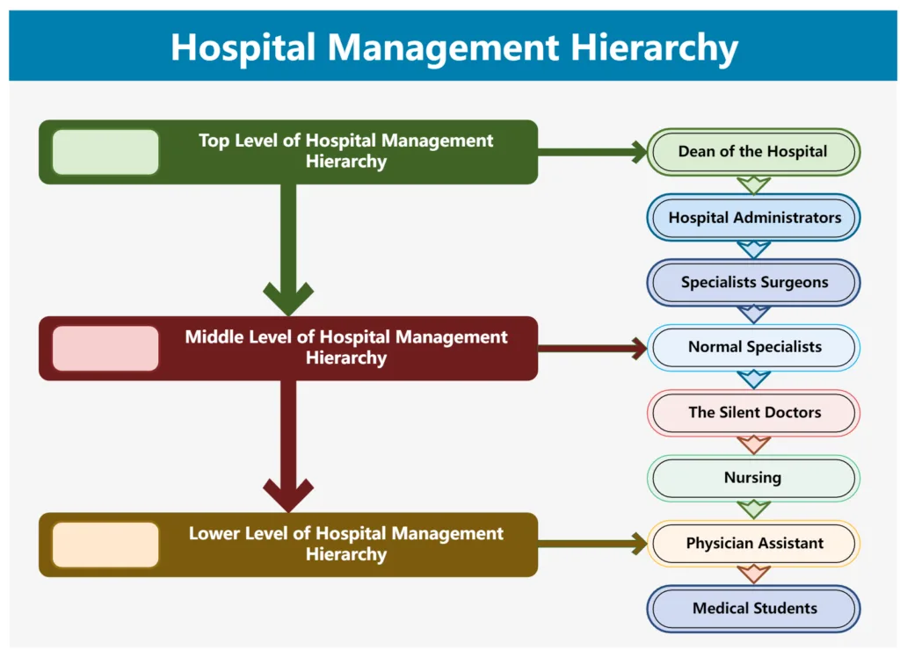
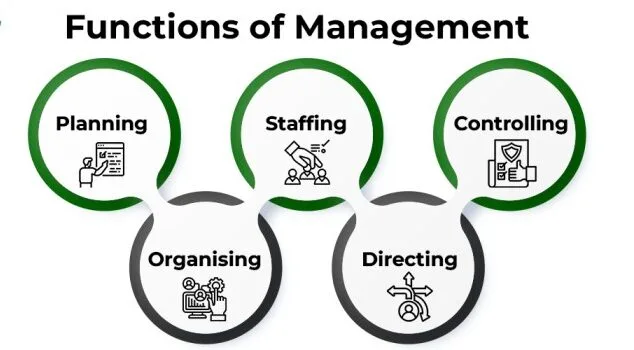
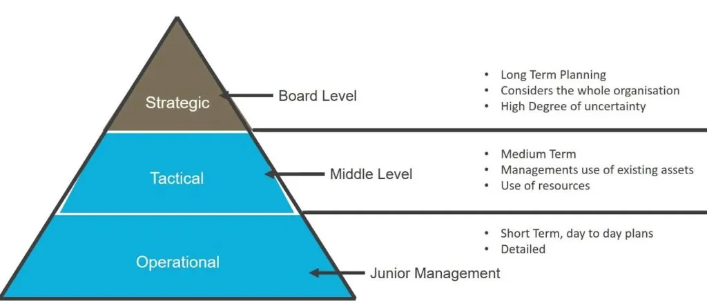
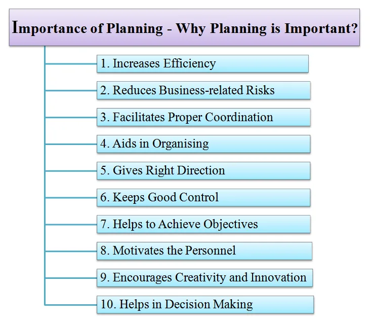

Expanded Nursing Uganda Explanation
Hospital economy should be reviewed through safe maternal and newborn assessment, early recognition of danger signs, respectful communication and timely referral. Connect the definition to vital signs, bleeding, fetal or newborn wellbeing, patient education and local protocol requirements.
01 Topic: General principles and rules of all nursing procedures
These are guidelines that should be observed as a nurse carries out all nursing procedures:
- Show interest and devotion to duty and be alert and prompt in all your assignments.
- Make the patient the focus of attention , as she/he is the sole reason for the existence of the nursing profession.
- Be clean in appearance and behave with an apparent ease and assurance in all-nursing procedures.
- Demonstrate and inspire confidence , knowledge of and efficiency in techniques at all times.
- Use the available equipment and nursing appliances , which should be collected quickly, quietly and methodically .
- Trays and trolleys must be neat and complete to give an adequate nursing procedure.
- Thoroughly test all equipment to make sure it is in good condition, before preparing the tray or trolley.
- Display a high sense of responsibility in administration and custody of drugs and in the dispensation of any kind of treatment.
- Keep up to date with new methods, techniques, drugs and lotions ; know exactly their use, dosage, toxic effects and calculation of the dosage.
02 Patient's Comfort (Principles related to Procedures)
Ensuring maximum comfort for the patient during any procedure is essential and reflects respect for their privacy. Key aspects include:
- Ensure maximum comfort to the patient and respect his/her privacy by: Telling him/her what is to take place, explaining the procedure as simple as possible.
- Protect the patient from draught and avoid undue exposure, make sure that windows are closed and screens appropriately placed.
- Establish a good nurse/patient relationship to secure the patient’s confidence and to induce their tranquility of mind.
- Observe any change in the patient’s general condition during the procedure.
- Always prepare everything that will be required and have it by the patient’s bedside before beginning the procedure.
- Lift and handle the patient as gently as possible exhibiting courtesy, efficiency, and skill.
03 General Rules for Carrying out Nursing Procedures (Detailed Steps)
- Collect the equipment needed and prepare the tray /trolley.
- Explain the procedure to the patient.
- Screen the bed and close adjacent windows.
- Bring the tray / trolley to the bed side.
- Position the patient.
- Wash hands.
- Carry out the procedure.
- On completion of the procedure leave the patient comfortable.
- Leave the surroundings dry and tidy.
- Clean and replace the equipment.
- Wash hands.
- Report and record procedure.
- Send any specimens obtained to the Laboratory as soon as possible.
04 Topic: Hospital Economy
Understanding how resources are managed efficiently in the hospital setting is part of the introductory aspects of the nursing profession.
Note: Detailed information specifically titled "Hospital Economy" or elaborating on its principles and rules was not present in the provided lecture notes document beyond the initial curriculum outline. However, understanding the responsible use of resources, such as equipment and supplies, as mentioned in other sections (e.g., equipment maintenance, preparation for procedures), is a practical aspect of hospital economy.
05 Daily Cleaning
A. Ward Maintenance
- Collect all equipment necessary on the trolley.
- Make the patient’s beds and pull bed and lockers away from the wall.
- Collect and put away all the equipment not necessary on the ward for immediate use.
- The floor is swept and mopped .
- Carry out dump and dry dusting of all ward furniture and equipment, using the ward cleaning trolley.
- Return beds and lockers to their position.
- Replace sputum mugs with clean ones empty the used ones, rinse well in the sluice room, leave soaked in the disinfectant.
- Give out clean drinking mugs and feeding cups . Refill bottles for drinking water if required.
- Clean used equipment and keep in the proper place.
In dressing and treatment rooms:
- Shelves - Wash daily and whenever necessary
- Sinks and wash basins - wash daily and after use with vim or hebitane.
- Sterilizers - empty, clean inside with hebitane when necessary, refill with clean water.
- Trolleys - wash daily and after with soap and water, dry thoroughly. Do not use gumption or vim on food trolleys.
- Lifting forceps - boiled daily and whenever contaminated forceps jars cleaned, boiled and lotion changed daily. Lotion jar inspected daily and more lotion added if required. Or boiled or autoclaved daily and kept in a dry sterile container.
- Soiled dressing buckets - keep lid on at all times, keep the outside clean. And they should be thoroughly cleansed after emptying.
Hygiene in Special Areas (Operating theatre, Intensive care unit (ICU), Pre-mature unit and Labour suit.)
Operating theatre:
- Operating tables, trolleys and shelves - dump dust daily using water and detergent.
- Walls - dump cleaning 2.5-3m downward daily with water and detergent.
- Floors - scrub with water and detergent daily and whenever soiled and leave to dry.
- Floors where there are spillages of body fluids - apply 1% hydrochloride for 15min and spot clean. Clean after every operation. Do weekly cleaning of all equipment and areas.
Note: The same method of cleaning applies to all the rest of the special areas mentioned above (intensive care unit, pr-mature unit and labour suit.)
B. Equipment Maintenance (Detailed Procedures - extracted from your notes):
It is the responsibility of every health worker in the hospital to see that all equipment is very well looked after, serviced regularly and given immediate attention when there is any defect.
Equipment should be handled with care and breakages reported immediately, this will definitely keep the hospital expenditure very low.
1. Electric machine
Have regular servicing of the machines and as soon as they are out of order, make a requisition to the maintenance department, have them inspected and repaired.
- Refrigerators : These are regulated in order to be effective, regulators should be regularly checked and temperatures recorded every day. Defrosting should be carried out weekly, and then the interior is thoroughly washed with hot soapy water, rinsed and the shelves replaced. Ice trays are taken out and washed with cold water.
- Suction machines : Wash with soap and water daily and whenever used. Replace the lotion in the bottles.
- Autoclaves : Dump dust them daily, check the functionality of the water and pressure gauges. Always unplug from the mains when not in use.
- Boilers and sterilizers : Empty, clean inside with gumption/hebitane. When necessary refill with clean water and always unplug from the mains when not in use.
- Hot plates : Any substance spilt on it should be wiped off immediately using a dump cloth. Always unplug from the mains when not in use.
- Oxygen concentrators : Dump dust daily; make sure there is water in the wolf’s bottles and check the regulator daily. Always unplug from the mains when not in use and clean the filter.
- Lamps : Dump then dry and dust shades and bulbs daily.
2. Oxygen cylinders
Dump dust them daily. Check whether the flow meters are working; check whether there is oxygen in the cylinder and the far the water level in the wolf’s bottles. Label the empty cylinders boldly with the word ‘ Empty .’
3. Drainage under water seal gadgets
Disinfect, clean and sterilize.
4. Beds
Make them and dump dust the rails daily. On discharge of the patient; wash with soap and water.
5. Bed rests/backrests
Dump dust daily, wash with soap and water, rinse and dry when necessary and on discharge on an infectious patient disinfect.
6. Bed blocks/elevators
Dump dust daily. On discharge of the patients, scrub with soap and water.
7. Bed cradles
Wash with soap and water, rinse and dry when necessary and in discharge of the patient, scrub with soap and water.
8. Fracture boards
On discharge of the patients, scrub with soap and water.
9. Drip stands
Dump dust daily, wash with soap and water whenever necessary and keep them dry.
10. Trolleys
Wash daily and after use with soap and water, dry thoroughly. Do not use vim on food trolleys.
11. Enamel ware
Wash with soap and water after use, if stained use vim or hebitane/gumption, rinse and dry.
12. Stainless steel ware
Wash with soap or detergent and water, rinse and dry. Do not use vim.
13. Plastic ware
Wash with soap or detergent and water, rinse and dry. Use vim if necessary.
14. Shelves
Wash daily and whenever necessary.
15. Sinks and hand washing basins
Wash daily and after use with vim.
16. Crockery and glass ware
Wash daily with soap or detergent and water, rinse and dry.
17. Cutlery
Wash with soap or detergent and water, rinse and dry.
18. Soiled dressing buckets
Keep the lid on at all times, keep the outside clean. And they should be thoroughly cleansed after emptying.
N.B: Use large basins for dusting; do not use receivers and bowls.
19. Infusion stands
Dump and dust daily, wash with soap and water, dry when necessary.
06 Weekly Cleaning
In the ward:
- Move the beds from one side of the ward to the other
- Put lockers outside the ward
Proceed on the empty side as follows;
- Brush walls and ceiling and wire gauze of ventilators with long handled brush.
- Wash painted walls with soap and water, cleaning any edges and corners carefully.
- Wash lamp shades.
- The sweeper then sweeps and scrubs the floor.
- Clean windows.
- Replace beds
Repeat the same procedure on the other side.
- Scrub lockers and return to the ward when dry.
- Turn out and scrub all cupboards.
- Polish furniture if necessary.
In the ward annexes (kitchen, bathroom, linen room etc)
Turn out and clean both the room and equipment.
Refrigerators:
Defrosting should be carried weekly, when the interior is washed thoroughly with hot soapy water, rinsed and the shelves replaced. The ice trays are taken out and washed with cold water.
Bedding and linen:
Care of mattress foam-rubber with cotton and plastic:
Do not remove the plastic mattress cover, wash with soap and water, rinse and dry whenever necessary.
Pillows:
May be protected by plastic cover under cotton cover, to avoid soiling. The cover is removed for laundry whenever dirty, do not remove the plastic cover, wash with and soap, dry and put on the cover.
Rubber goods:
Use only soap and cold water. Before hanging to dry wipe off excess water, do not fold if they are to be out of use for a long time, powder them before storing away.
Do not hang on hot pipes or boiling sterilizers or in the sun.
All linen from the infectious patients should be soaked in disinfectant and soiled linen should be sluiced before sending to laundry.
If linen has been stained with blood soak in cold water for 2-3 hours then rinse.
On discharge of patients all linen should be removed and sent to laundry.
Rubber sheets:
Mackintoshes are washed in soapy water and rinsed, hang out to dry, but never folded.
Rubber tubing:
Rubber tubing-catheters and long tubing; these should be washed in soapy water, and under running water, rolled in the hands immediately after use. Rinse and roll and hang to dry.
Woolen blankets:
Bed blankets; avoid frequent washing, but they should be sent to laundry whenever soiled.
Ward linen:
To avoid cross infection in hospitals great care should be taken in handling of soiled linen contain discharges from patients.
During bed making soiled linen should be separated and be put in a special dirty container/hamper.
A trolley should be used for clean linen.
07 DAMP DUSTING
Is the cleaning/brushing off, of the dust from a surface using a slightly wet cloth e.g. as of a table, chair, floor or wall etc.
Requirement (prepare a trolley):
Top shelf:
- Basin of clean water
- Soap and vim
- 2 Clean dusters in bowl
- A jar of clean water
Bottom shelf:
- Container for rubbish
- Bucket for dirty water
- Gloves
- Apron
- Gumboots
Procedure:
- Wash hands and put on gloves. Put on apron and gumboots.
- Always start to dust from the highest points or things first and work downward so you do not dirtied surfaces already cleaned.
- Remove items from the surface to be cleaned.
- Dampen or rinse the cloth in cleaning water.
- Wipe away the dust with the damp cloth/duster.
- Flat surfaces, wipe in straight lines beginning with the edges once each time.
- Turn the cloth on each side 2 nd pass and rinse regularly in clean water.
- Take care to damp dust the edges and undersides of the surfaces after the tops.
- Where there are extendable items, such as bedside tables, are to be damp dusted extend the before beginning to work.
- Polish with the dry duster to clean and dry.
- Change the cleaning water when it becomes soiled (dirty)
- Greasy or stubborn deposits may require repeated passes.
- Replace any items moved on the clean surface when it is dry.
- On completion, clean and dry all equipment and store safely and tidily in a secure storage area.
- Remove gloves and wash hands.
- Document the procedure
N.B: The basin used for dusting should be large one, receivers and dressing bowls are not to be used.
08 RULES ON CARE OF ALL TYPES OF LINEN
- Linen should be used only for the purpose it is intended for.
- Avoid frequent laundering of woolen articles.
- All linen should be marked, checked before and on retuning from laundry.
- Check all linen after laundry for any repairs
- Lending and borrowing is avoided, lending book may be necessary
- Removal of stains; Blood- soak immediately in cold water, if it fails to come off, use hydrogen peroxide or ammonia and rinse it well with cold water afterwards.
- Ink- put immediately in cold water or milk, until the stain fades, later use methylated spirit.
- Coffee and tea stains- wash in cold water, then put in hot water.
- Iodine stains- use hot water or ammonia the rinse.
- Stains caused by drugs- use hot water or ammonia the rinse.
09 Nursing Uganda Clinical Lens
Use General principles and rules of all nursing procedures as a practical nursing topic, not only a memorized definition. Translate theory into safe decisions, accountability, communication and service improvement.
- What to understand first: define general principles and rules of all nursing procedures, identify the normal or expected pattern, then explain what changes when the patient is unwell.
- Why it matters in care: the nurse must recognize risk early, explain findings clearly, document accurately and know when to escalate.
- How to revise it: connect each point to assessment, nursing diagnosis or care problem, intervention, rationale and evaluation.
10 Assessment Guide
- The problem, stakeholders, available resources, policy requirements and ethical issues.
- Risks to patients, staff, confidentiality, quality, costs and continuity.
- Documentation, reporting lines, supervision and evaluation measures.
11 Nursing Priorities, Rationales and Outcomes
- Use evidence, policy and professional standards to guide action.
- Communicate clearly, document decisions and protect confidentiality.
- Evaluate whether the action improves safety, learning or service delivery.
The rationale for these priorities is patient safety: nursing actions should prevent deterioration, reduce discomfort, support recovery and create clear evidence for the next caregiver.
- Expected outcome: The plan is documented, realistic, ethical and improves patient care or learning outcomes.
12 Patient Teaching and Revision Check
- Explain general principles and rules of all nursing procedures in simple language the patient or caregiver can repeat back.
- Teach warning signs, medicine or follow-up instructions, hygiene or lifestyle points where relevant.
- For exams, prepare a short answer using: definition, causes or risk factors, signs, assessment, management, complications and prevention.
- For ward practice, document baseline findings, actions taken, patient response and the plan for review.
Illustrations and Diagrams (8)






Related Video Lectures
Watch nursing lecture videos on YouTube for this topic. Opens in a new tab.
Watch on YouTubeExternal link: YouTube may use its own cookies and terms. Nursing Uganda is not affiliated with YouTube.